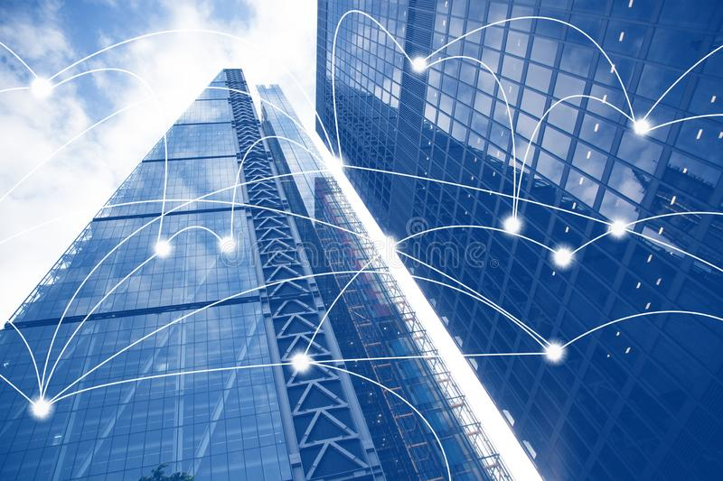

Activity 1
In this part, we discussed about the IoT applications.
What is an IoT application?

- Here we will have a look at some of the characteristics of an IoT Application :-
- -It is a collection of services
- -It integrates data from the various devices/ sensors connected.
- -It is real-time.
- -It analyzes ada using ML and AI.
- -It uses cloud.
What are some examples of IoT application?
- here are some of the examples of IoT applications :
- -Self driven cars.
- -Fitness Trackers.
- -Home Automation.
- -Automated Trasportation.
- -Agricultural Drones.
what are the main features needed?
- Here are main features of an IoT application :-
- -Real-Time.
- -Stability.
- -Security
- -Smooth integration of devices.
Hence, this was all we discussed in Activity 1.
Activity 2
In this part, we had a discussion on smart building and its
characteristics.
what does smart mean?
- Here are some of the characteristics of something smart :-
- -Intelligent.
- -Specific.
- -Time-bound.
- -Logically Efficient.
- -Implements Percipient approach.
what are some Smart-building scenarios?
- Here are some of the scenarios related ot smart building:-
- -Carbon Monoxide monitoring to maintain appropriate Air Quality Index.
- -HVAC- Controlling Building Temperature.
- -Security and Maintenance through devices to keep a check on exits and CCTV remotely.
- -Detect Occupancy - the presence of movement within its given range.
What are the main features needed?
- Here are main features needed in a smart building:-
- -Automated lighting System.
- -Smart Taps.
- -Automated Doors.
- -Accessibility for the disabled.
- -Automated parking system.
Hence, this was all we discussed in activity 2.
Activity 3
In this part, we are going to look at control interface and its characteristics.
what are the high-level features of Control Interface?
- Here are main features of Control Interface :-
- -User friendly.
- -provide data security.
- -Should support Two-way communication.
- -Manage faults.
who are the users of the Control Interface?
- Here are the users of the control interface:-
- -HVAC System: Building management will be the user.
- -Security control system is efficiently handled by the security team.
- -Security
what are the parts needed?
- Here are the parts needed in the control interface :-
- -Microcontroller.
- -Light sensors(Photodiodes, Photoresistors, Photovoltaic).
- -Occupancy Sensors (Ultrasonic, PIR, IR)
Hence, this was all that was discussed during Activity 3.